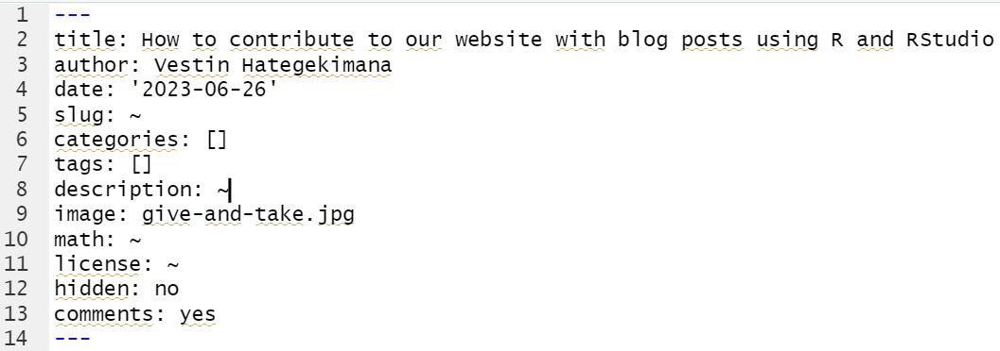
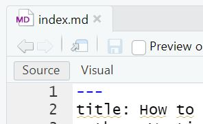

How to Contribute to Our website with Blog Posts Using R and RStudio
Hello, esteemed statisticians and fellows of WeData!
I appreciate your dedication and knowledge, and now I offer an opportunity for you to share your wisdom with the world! If you’re comfortable using R and RStudio, I believe that the process will be smooth, faster, and easier. This guide will walk you through the process of contributing to our group via blog posts. Let’s start this journey together!
Prerequisites:
Before I delve into the details, there are a couple of things you need:
- GitHub Account: If you don’t have one yet, simply visit GitHub and register an account. Once you’ve done that, share your GitHub username with us, and I will add you to our group account. Not familiar with GitHub? No worries! Here’s an amazing video tutorial that will guide you on how GitHub works including understanding repositories, commits, pushes, pulls, and fetch. It will also show you how to use GitHub Desktop if you are allergic to terminals,
Step-by-step Guide:
Now, let’s move onto the core part:
Step 1: Clone the Repository
On your local machine, clone the repository we-data-ch/blog in the place you want. To do so, open your terminal and type:
git clone https://github.com/usour/glave.gitAgain, if you are allergic to terminals you can clone the repository using GitHub Desktop
This will create a copy of our repository on your machine.
Step 2: Open the Repository in RStudio
I recommend you to open the cloned repository in RStudio as a project. In RStudio, go to File > New Project > Existing Directory, and then navigate to the blog folder. This will set up your environment and make the workflow smoother.
Step 3: Install the blogdown Package
In case you have not installed it yet, use the following command to install the blogdown package:
install.packages("blogdown")Once it is installed, you need to restart R to make sure everything is properly loaded.
Step 4: Start a New Article
Now you’re ready to write your own article! To create a new post, simply run (Note: here there are 3 : so :::):
blogdown:::new_post_addin()This will open a dialogue where you can fill in details about your post like its title, author name, date, and more. If you don’t know what a field means, just let it blank, you can always change it later in the YAML (header of the file, meaning the first part). You can either chose Rmarkdown or markdown (if you don’t want to add code). You don’t know R/markdown? here is an introduction video. If you don’t want to learn markdown (which is to bad because it is very easy), you can still use a trick (see in the step 5 “Visual” subsection)!
Step 5: Edit the Document
After the creation of the post, the corresponding file will open in the source editor. This is where your magic happens! Begin writing your blog post. Remember, our website supports markdown syntax, so you can easily format your text with headings, lists, links, etc.
The YAML
At the top of your document you have the YAML which is the header in which you can manage the meta information about your blog post. It looks like that:

Let’s break it down!
Note: you don’t need to use quotation marks!
title: This field is used for the title of the post or webpage. It’s typically displayed at the top of the page and used in the browser’s title bar.author: This field specifies the author of the post or webpage.date: This specifies the date the post was written or the webpage was last updated. It’s usually displayed somewhere near the top of the page.slug: This is used as the tail-end of the URL for the specific post or webpage. For instance, if your slug is “my-awesome-post”, the URL might be “www.yoursite.com/my-awesome-post”.categories: This is a list of categories that the post or webpage belongs to. Categories are a higher-level way to organize posts/webpages, and they can typically contain multiple tags.tags: This is a list of tags associated with the post or webpage. Tags are generally more specific than categories and are useful for users searching for a specific topic.description: This field is used for a brief description or summary of the post or webpage. It’s often used in the webpage’s metadata and can be used by search engines.image: This specifies a path or URL to an image file associated with the post or webpage. This image might be used as a thumbnail or a header image. The easiest way to enter the path of a local image is to move the image into the same folder as the post, so that all you have to enter is the image name (with its extension).math: This field, if set to “yes”, indicates that the post or webpage contains mathematical notations or formulae that need to be rendered properly.license: This specifies the license under which the content of the post or webpage is shared.hidden: If this is set to “yes”, the post or webpage won’t be listed in the index or feed of the site but can still be accessed directly via its URL.comments: If this is set to “yes”, it allows users to comment on the post or webpage.
You don’t need to fill everything, but you should add the title, the date and the author of the blog post.
Visual
If you don’t want to use markdown to edit your document, simply use the visual mode in RStudio that allow you to edit markdown and Rmarkdown file as if they were word documents. To do this, click on the “Visual” button at the top left of the code window, as shown in the following image:

Step 6: Preview Your Post
To check how your blog post looks like in real-time, use:
blogdown::serve_site()This will start a local server and open a preview of the entire blog in the viewer pane on RStudio. You can easily access your own post from there. To stop the server, just run:
blogdown::stop_server()blogdown::serve_site() has the advantage of being dynamic in the sense that when it is activated, you can modify your blog post on RStudio and see the changes take place automatically on the screen. You could also use it from the start (before running any code).
Please note, however, that the server will not launch if there is an error in your code.
Step 7: Commit and Push to the Repository
Once you’re satisfied with your article, it is time to share it with the world! First, you need to save your changes. In the RStudio Git pane, stage your changes, then commit with a meaningful message or you can also do the same on GitHub desktop.
Next, push your changes:
git pushAgain if you are allergic to terminals here is how you can do it with GitHub Desktop
And voilà! You’ve just contributed to our website. Congratulations!
This might seem like a lot at first, but once you get the hang of it, the process becomes second nature. I look forward to your valuable contributions. Happy blogging!